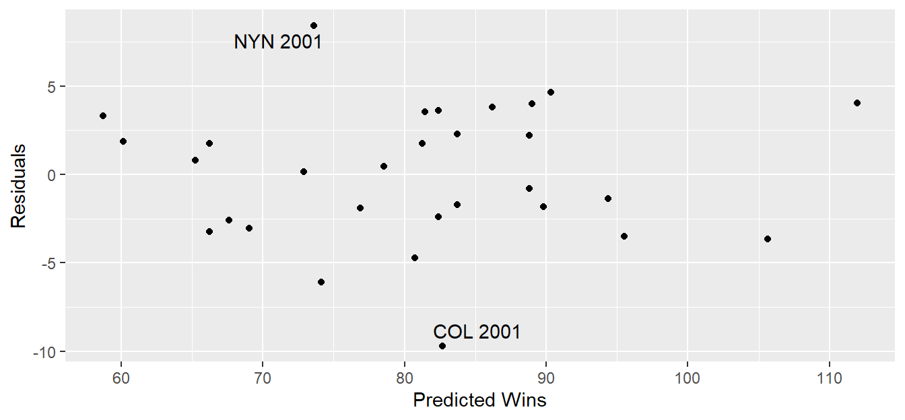

library(Lahman)
library(tidyverse)
library(knitr)
library(ggrepel)
library(broom)MA388 Sabermetrics: Lesson 6
How many runs is a win? - Part I
Review
We finished our intro to R! I hope you feel more confident in your ability to work with databases and large data sets.
Major concepts:
five tidyverse verbs
relational databases
split, apply, combine data
plotting in R (ggplot)
Today we begin our formal study of sabermetrics by answering a super important question: how many runs is a win?
Using the Teams data frame, plot the number of wins versus run differential (runs scored \(R\) - runs allowed \(RA\)) for all teams in the 2001 MLB season. Label the teams using the ggrepel package, color the points by lgID, and add a linear model using geom_smooth().
teams2001 <- Teams |>
filter(yearID == 2001) |>
mutate(RD = R - RA,
Wpct = W / G)
Introduction
At the end of 2001, the Oakland Athletics were losing three star players (Johnny Damon, Jason Giambi, and Jason Isringhausen) to free agency. Their general manager, Billy Beane, had a limited budget to work with as he looked for their replacements. He wanted to find players who were effective at producing runs but were undervalued in the market. At the time, teams used mostly traditional statistics like batting average (BA), home runs (HR), and runs batted in (RBI) to value players. However, evidence from sabermetrics suggested there were better statistics for determining players’ contributions to run scoring. The book Moneyball by Michael Lewis and the film by the same name follow the 2002 Oakland A’s.
Put yourself in the position of Billy Beane. How would you approach this problem?
Run Differential and Wins
In Figure 1, is a linear model appropriate?
In Figure 1, how many wins are associated with a 100 run differential?
A common rule of thumb in baseball is 10 additional net runs over the course of a season equals one additional win. This gives us a convenient way to evaluate the impact of different players and plays.
To be more formal, we could use linear regression.
\(Wins_i = \beta_0 + \beta_1 RD_i + \epsilon_i \quad \epsilon_i \sim \text{Normal}(0,\sigma^2)\)
where \(Wins_i\) and \(RD_i\) are the wins and run differential for team \(i\).
Interpret the coefficients in this model.
# Fit a linear regression model.
wins_lm = lm(W ~ RD, data = teams2001)
# Summary of linear model.
wins_lm |>
summary()
Call:
lm(formula = W ~ RD, data = teams2001)
Residuals:
Min 1Q Median 3Q Max
-9.6914 -2.5399 0.2891 3.0442 8.4091
Coefficients:
Estimate Std. Error t value Pr(>|t|)
(Intercept) 80.93333 0.70715 114.45 <2e-16 ***
RD 0.10341 0.00598 17.29 <2e-16 ***
---
Signif. codes: 0 '***' 0.001 '**' 0.01 '*' 0.05 '.' 0.1 ' ' 1
Residual standard error: 3.873 on 28 degrees of freedom
Multiple R-squared: 0.9144, Adjusted R-squared: 0.9113
F-statistic: 299 on 1 and 28 DF, p-value: < 2.2e-16# Print a clean table of results.
wins_lm |>
tidy() |>
kable(digits = 2)| term | estimate | std.error | statistic | p.value |
|---|---|---|---|---|
| (Intercept) | 80.93 | 0.71 | 114.45 | 0 |
| RD | 0.10 | 0.01 | 17.29 | 0 |
Calculate the run differential that would typically result in one additional win.
Based on the regression model, do you feel confident in your recommended run differential? Explain how you decided.
Let’s look at the residuals for this regression. The broom package helps get model results for model diagnostic plots.
# Look at the teams2001 column names before and after running the next line.
teams2001 = augment(wins_lm, data = teams2001)
teams2001 |>
ggplot(aes(x = .fitted, y = .resid)) +
geom_point() +
geom_text_repel(data = filter(teams2001, abs(.resid) > 7.5),
aes(label = paste(teamID,yearID))) +
labs(x = "Predicted Wins",
y = "Residuals")
What units are the residuals in?
In Figure 2, there are two labeled teams with large residuals. Briefly explain why these teams might have large residuals.
Above, we used run differential to predict number of wins. Typically, we use win percentage instead of wins. Does it matter?
Repeat the above analysis using win percentage instead of wins. Report the run differential that typically results in one additional win.
How many wins to make the playoffs?
Let’s see historically how many wins it takes to make the playoffs. Below, we will look at the five seasons (1997-2001) preceding the 2002 season. First, we need to add a variable playoff to the Teams table, which is an indicator of whether the team made the playoffs (1) or did not make the playoffs (2).
# Get teams in the 1997-2001 seasons.
my_teams <- Teams |>
filter(yearID >= 1997, yearID <= 2001)
# Obtain a list of teams who made the playoffs by year.
playoff_teams <- SeriesPost |>
filter(yearID >= 1997, yearID <= 2001) |>
select(yearID, teamIDwinner, teamIDloser) |>
pivot_longer(-yearID,
names_to = "result",
values_to = "teamID") |>
select(-result) |>
distinct() |>
mutate(playoffs = "yes")
# Add playoff information to my teams.
my_teams = my_teams |>
left_join(playoff_teams, by = c("yearID", "teamID")) |>
mutate(playoffs = replace_na(playoffs, "no"))
# Let's check whether we did this correctly.
# There should be eight playoff teams each year.
my_teams |>
count(yearID, playoffs) yearID playoffs n
1 1997 no 20
2 1997 yes 8
3 1998 no 22
4 1998 yes 8
5 1999 no 22
6 1999 yes 8
7 2000 no 22
8 2000 yes 8
9 2001 no 22
10 2001 yes 8Next, let’s look at the data.
my_teams |>
ggplot(aes(x = W, y = R, color = factor(playoffs))) +
geom_point() +
labs(x = "Wins",
y = "Runs Scored",
color = "Made Playoffs",
title = "Wins and Making the Playoffs") +
geom_text_repel(data = filter(my_teams, teamID == "OAK"),
aes(x = W, y = R, label = paste(teamID,yearID)),
show.legend = FALSE)
Based on the figure above, if you were Billy Beane, how many wins should you shoot for in order to have a good chance of making the playoffs?
Besides visual inspection, list methods you could use to assess whether a team will make the playoffs based on number of wins.